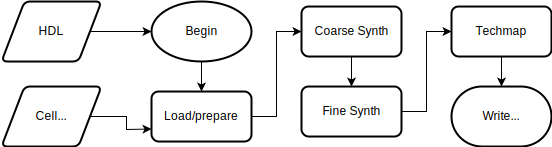

Project Apicula
Documenting the bitstream format of Gowin FPGAs
Outline
- Background
- FPGA internals
- The open source tools
- Internship
- Synthesis
- Fuzzing & ChipDB decoding
- Results
- Applications
- Research
- Education
Programmable logic device
HDL > boolean logic > LUTs & DFFs
Field Programmable Gate Array
Project Apicula
- Yosys target
- Nextpnr target
- Bitstream parser/generator
Yosys synthesis flow

Fuzzing
- Generate bitstream
- Modify code
- Generate bitstream
- Compare
- Repeat a million times
Fuzzing
- Preferred method for legal reasons
- Several fuzzers written
- Roadblock: no routing info in PnR output
- Soultion: Complement with ChipDB decoding
ChipDB decoding
- Vendor FPGA tools come with undocumented data files
- Reverse-engineer file structure and write parser
Tile format

Research
| Research Goal | Proprietary | Open Source |
|---|
| Synthesis algorithms |
- Try them in dated academic synthesis tool
- No real-world impact
|
- Try them in modern synthesis tool
- Immediate real-world impact
|
| PnR algorithms |
- Try them on abstract imaginary toy FPGAs
- No real-world impact
|
- Try them on commercial FPGAs
- Immediate real-world impact
|
| HDL |
- Compile to VHDL/Verilog
- Deal with vendor incompatibilities
|
- Write new synthesis frontend
- Target well-defined intermediate representation
|
Education
Open source
- Cheap FPGA boards
- No license required
- Works properly on Windows, macOS, Linux
- Fast synthesis times
- Not horrible
- Cool stuff like formal verification